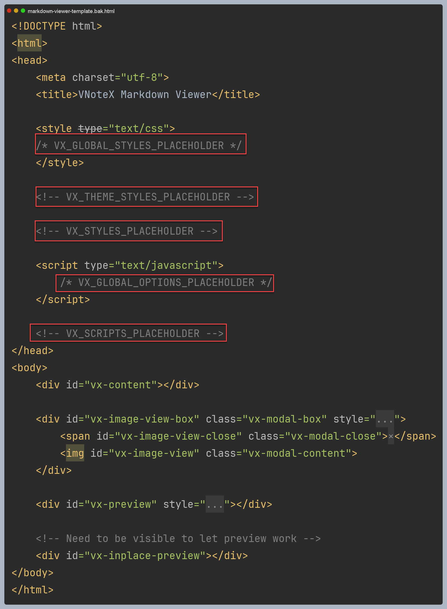

GitHub 1.2 万星 Qt 项目 VNote 源码解读(四)：模板装配

在本系列的前面的文章中我们介绍过 VNote 展示 Markdown 的渲染过程，其中第一个关键步骤就是读取资源文件中的一个模板文件 markdown-viewer-template.html ，然后根据配置向其中嵌入相应的 css，js 代码和文件引用，使之前变成具有 Markdown 文本渲染能力的页面，之后才是设置 Markdown 文本进行实际的渲染工作。本文，我们重点关注一下 HTML 模板文件是如何经过装配变成一个完整的 HTML 页面的。
1. 设计思路
初始的 HMTL 模板文件是 markdown-viewer-template.html ，该文件中包含多处 <!-- xxx --> 和 /* xxx */ 标记：

试读结束

GitHub 1.2 万星 Qt 项目 VNote 源码解读(四)：模板装配
https://laurence.enlightgram.com/qt/vnote-source-4-templates/